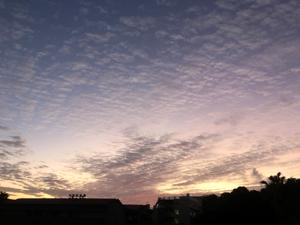
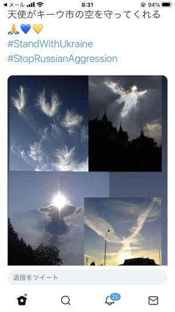

うるがいの話 ある日
最新: 卒業写真【うるがいの話 ある日】とは 一日だけのプログです
『うるがいの話』の最新一日だけのプログで、通信料が少なく経済的だ。カニの画像をクリックすると全ての日付が載る『うるがいの話』サイトを表示します
|
|
【うるがいの話】 うるがい(ｳﾙｶﾞｲ urugai)とは、『もずくがに』の名前でとても大きくなります。 |
|---|---|
|
|
【カミマヤーの話】 猫のことを方言でマヤーといいます。カミマヤー（kamimayaa）とは、神の猫のことです。 |
|
【たながぁの音楽】 たながぁ（ﾀﾅｶﾞｰtanagaa）とは手長えびのことで、何種類かあり大きいのは車 エビぐらいになります。 |

|
【ぶながぁの話】 ぶながー(bunagaa)とは、赤い髪の毛、赤い身体、そして身長は１ｍ２０ｃｍ ぐらい、川の蟹を食べているの目撃された。場所は沖縄県国頭郡大宜味村のと ある村僕の隣近所に住んでいる爺さんから、聞いた話です。 |
|
|
【ギーマの話】 ギーマ(giima)とは、山原の里山に咲くスズランに似た、 花を付けます。実は食べられます、 気が付くと口の周りが紫になっています。 |
2022年03月01日 (火）卒業写真
16:43

あの日も晴れで、夜から雨が降り始めた。卒業写真はありません、実家に放置
していたら、いつのまにか消滅していた。もう、写真の記憶をありません。
この日のために、卒業写真（三線演奏）の動画を、研修の演習を兼ねて作成し
た。
『卒業写真（三線演奏）』５分１０秒
限定公開
ツイターに在日ウクライナ大使館から『天使がキーウ市の空を守ってくれる』
と投稿があった。ンー、確かに・・・雲観察同好会委員より。
『トヨタ、国内全工場が休止 取引先にサイバー攻撃 脅迫メッセージも・再
開時期未定。ＮＨＫで、家庭用ルーターのセキュリティが危ない！と放送され
ていたので、番組で紹介していた横浜国立大学「am I infected?」でチェック
をしてもらった、安全とのこと、ほっ。

１６時３５分 ビットコインの総資産 ￥１４、４３７↑おぉ！